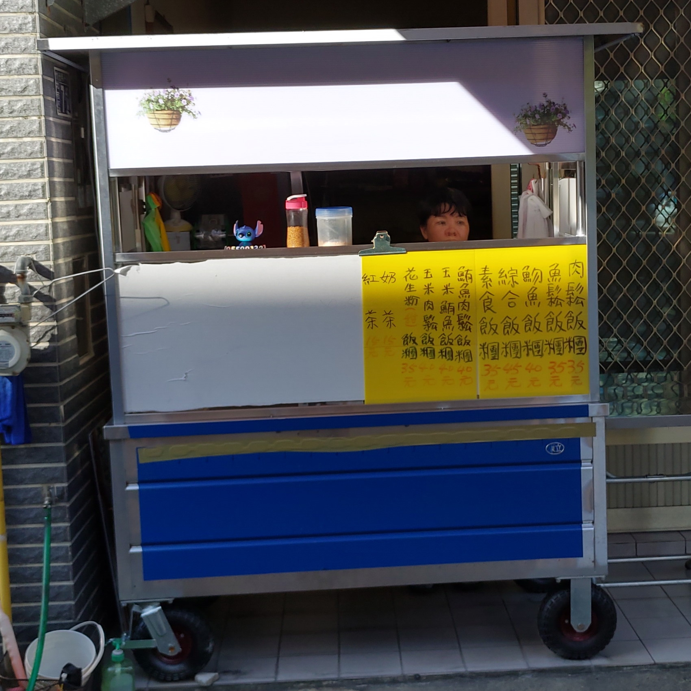
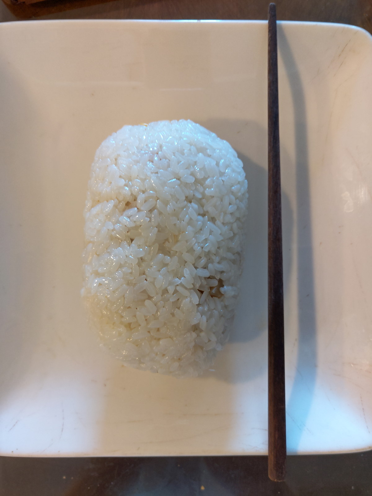
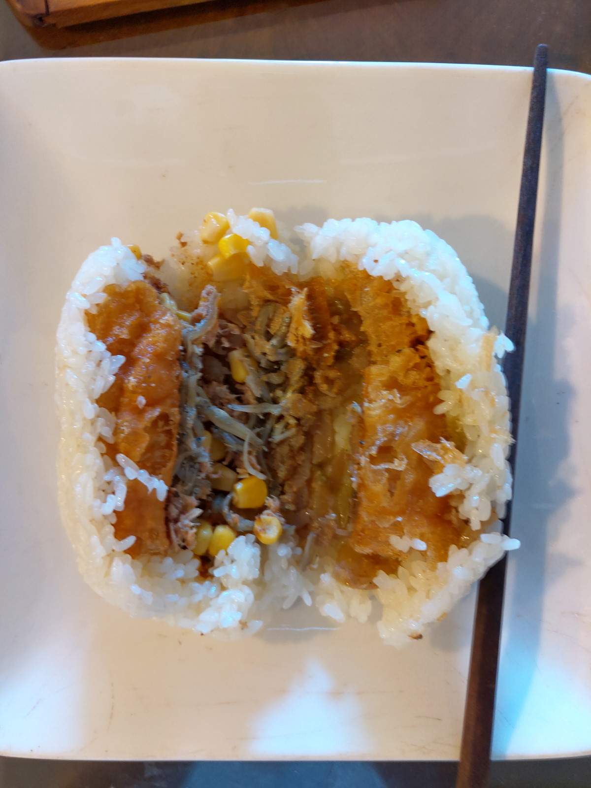

[竹北] 71號飯糰（飯糰姐姐）
| 餐廳名稱: | 71號飯糰（飯糰姐姐） |
|---|---|
| 地 址: | 新竹縣竹北市竹北市光明十街71號 |
| 營業時間: | 6：00～9：30 |
| 每星期日、一 公休 | |
| 電話 : | 0955991321 |
竹北優秀的飯糰，不外是 幸福飯糰，9號飯糰，馮姊姊飯糰 等，當然 其他還有一些優秀的沒列或太遠，這些飯糰成名已久，不是人很多， 就是難停車。最近發現這家 71號飯糰， 她在自家門口賣飯糰，那一帶略偏僻，好停車，吃起來也還不錯， 真是完美。
店門口，據她官網描述，本來是在竹北濱江花市現址賣飯糰，我搬來竹北時，濱江花市就已經在了，感覺是做很多年的老手了。 
請注意，我吃過 肉鬆 跟 綜合 兩種飯糰，招牌飯糰 其實就是肉鬆飯糰。 肉鬆飯糰我覺得略乾，最推薦 綜合飯糰，綜合飯糰的配方比較好吃。 
這次把 綜合飯糰 剖開給各位瞧瞧，油條很脆，有 小魚，玉米，有一點濕潤，整體很好吃。 
難得發現一家優秀飯糰店，如果不是網路搜尋，還真是很難發現呢。記得要選 綜合飯糰，而不是選 招牌飯糰 喔。